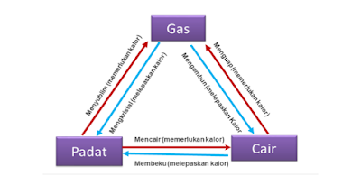

ZAT DAN PERUBAHANNYA
Perubahan bentuk zat adalah perubahan termodinamika dari satu fase suatu benda ke keadaan bentuk zat yang lain.
Setiap zat memiliki temperatur tertentu untuk berubah wujud. Suatu zat dapat berubah wujud menjadi tiga wujud yaitu cair, padat dan gas . Perubahan zat ini selalu diikuti dengan penyerapan atau pelepasan kalor.
Perubahan bentuk zat terjadi ketika titik tertentu tercapai oleh senyawa zat tersebut yang biasanya dikuantitaskan dalam angka suhu. Semisal cairan diproduksi menjadi padat harus mencapai titik bekunya dan cairan diproduksi menjadi gas harus mencapai titik didihnya.
Perubahan bentuk zat digolongkan menjadi enam peristiwa sebagai berikut:
- Membeku
Peristiwa perubahan bentuk dari cair menjadi padat. Dalam peristiwa ini zat melepaskan energi panas. Contoh peristiwa mencair yaitu air yang dimasukan kedalam freezer akan berubah menjadi es batu. - Mencair
Peristiwa perubahan bentuk zat dari padat menjadi cair. Dalam peristiwa ini zat memerlukan energi panas. Contoh peristiwa mencair yaitu pada batu es yang berubah menjadi cair, lilin yang dipanaskan - Menguap
Peristiwa perubahan bentuk dari cair menjadi gas. Dalam peristiwa ini zat memerlukan energi panas. Contohnya cairan yang direbus jika dibiarkan lama-kelamaan akan habis, bensin yang dibiarkan berada pada tempat terbuka lama-lama juga akan berubah menjadi gas. - Mengembun
Peristiwa perubahan bentuk dari gas menjadi cair. Dalam peristiwa ini zat melepaskan energi panas. Contoh mengembun adalah ketika kita menyimpan es batu dalam sebuah gelas maka anggota luar gelas akan basah, atau rumput di lapangan pada pagi hari menjadi basah padahal sore harinya tidak turun hujan - Menyublin
Peristiwa perubahan bentuk dari padat menjadi gas. Dalam peristiwa ini zat memerlukan energi panas. Contoh menyublim yaitu pada kapur barus yang disimpan pada lemari pakaian lama-lama akan mengecil karena sudah berubah menjadi gas. - Mengkristal
Peristiwa perubahan bentuk dari gas menjadi padat. Dalam peristiwa ini zat melepaskan energi panas. Contoh mengkristal adalah pada peristiwa berubahnya uap menjadi salju.
Ada 3 jenis perubahan zat yaitu :
- Perubahan Secara Fisika
- Perubahan Secara Kimia
- Perubahan Secara Biologi
1. Perubahan Secara Fiska
adalah Perubahan bentuk suatu benda menjadi bentuk lain tetapi masih memiliki sifat yang sama.dan hasil perubahannya dapat dikembalikan kebentuk semula
Contohnya
- Air menjadi Es
- Gula larut dalam Air
- Garam Larut dalam air
- Lilin mencair
- memanaskan air
2. Perubahan Secara Kimia
adalah Perubahan bentuk suatu benda menjadi bentuk lain tetapi masih memiliki sifat yang sama.dan hasil perubahannya tidak dapat dikembalikan kebentuk semula
Contohnya :
- Besi berkarat
- Nasi basi
- Kayu dibakar
- Ubi menjadi tape
3. Perubahan Secara Biologi
adalah Perubahan bentuk suatu benda kebentuk yang lain dengan mengandalkan bantuan mahluk hidup
Contohnya :
- Pelapukan batu karena lumut
- Pelapukan kayu karena rayap